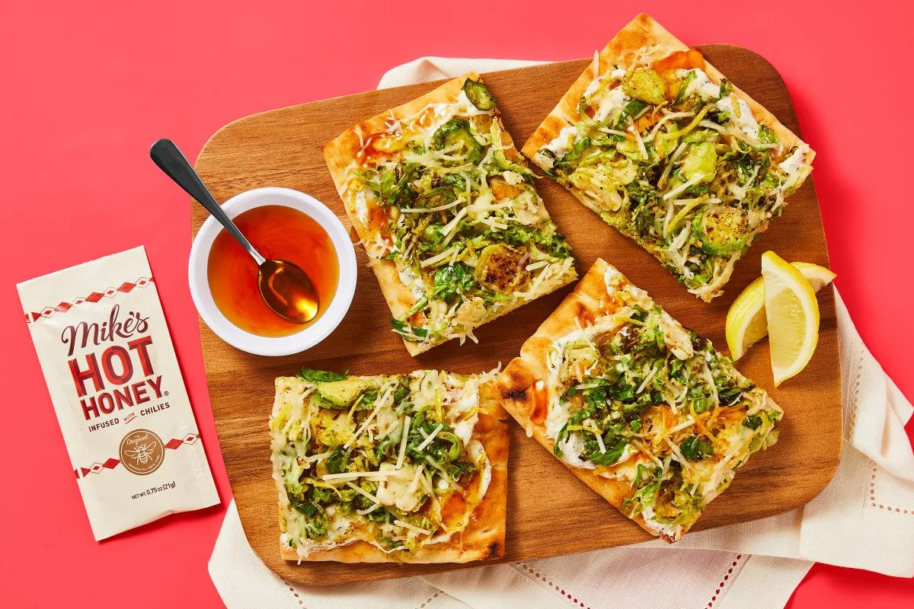

Honey Brussel and Flatbread Recipe

Easy to Make and Tasty to Eat!
This recipe is taken from HelloFresh and is perfect for a quick, yet scrumptous dinner time snack. Overall, the recipe takes around 20 minutes to make and serves about 1-3 people. Enjoy!
Ingredients
- Flatbread, 2 units
- Ricotta Cheese, 4oz.
- Brussel Sprouts, 8oz.
- Italian Seasoning, 1 tablespoon
- Hot Honey, 3/4oz.
- Lemon, 1 unit
- Parmesan Cheese, 3 tablespoons
- Italian Cheese Blend, 1/2 cup
Steps
- Adjust oven rack to top position and preheat oven to 450 degrees. Wash and dry produce. Trim and halve brussel sprouts lengthwise. Lay flat and thinly slice crosswise into shreds.
- Heat a large drizzle of oil in a large pan over medium-high heat. Add Brussels sprouts; season with ½ tsp Italian Seasoning (1 tsp for 4 servings) and a pinch of salt and pepper. (You'll use more Italian Seasoning in the next step.) Cook, stirring occasionally, until bright green and softened, 5-7 minutes. Remove from heat.
- While Brussels sprouts cook, zest and quarter lemon. In a small bowl, combine half the lemon zest, ½ cup ricotta (save any remaining for another use), ½ tsp Italian Seasoning (be sure to measure— we sent more), and a squeeze of lemon juice to taste. (For 4 servings, use ¾ of the lemon zest, 1 cup ricotta, and 1 tsp Italian Seasoning.) Stir in 1 TBSP olive oil (2 TBSP for 4) and season with salt and pepper.
- Place flatbreads on a baking sheet. Brush or rub each with a drizzle of olive oil and season with salt and pepper. Toast on top rack until golden brown, 3-5 minutes. (For 4 servings, divide flatbreads between 2 baking sheets; toast on top and middle racks, swapping rack positions halfway through baking.)
- Carefully spread toasted flatbreads with lemon ricotta. Top with a layer of Brussels sprouts. Sprinkle with Italian cheese and half the Parmesan (save the rest for serving). Bake on top rack until cheese melts and flatbreads are crispy, 4-6 minutes.
- Cut flatbreads into pieces. Divide between plates and drizzle with hot honey. Sprinkle with remaining Parmesan and remaining lemon zest to taste. Serve with any remaining lemon wedges on the side.